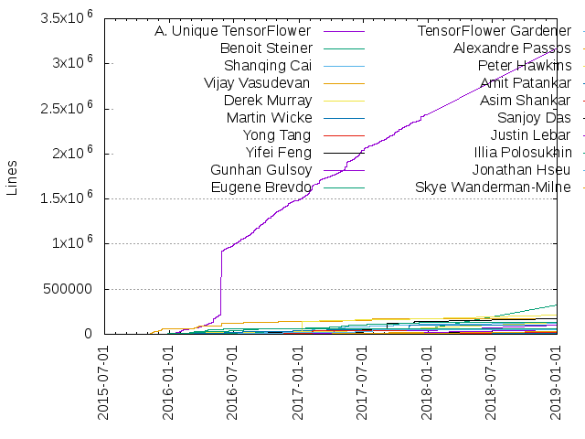
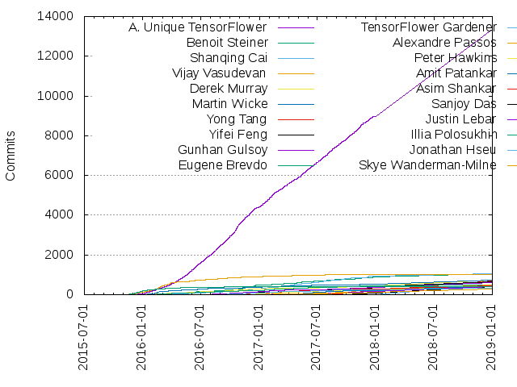

Authors
| Author | Commits (%) | + lines | - lines | First commit | Last commit | Age | Active days | # by commits |
|---|
| A. Unique TensorFlower | 13358 (31.21%) | 3180039 | 2052053 | 2015-12-14 | 2018-12-31 | 1112 days, 17:08:42 | 938 | 1 |
| Benoit Steiner | 1046 (2.44%) | 328061 | 137805 | 2015-12-17 | 2018-06-01 | 896 days, 20:36:11 | 391 | 2 |
| Shanqing Cai | 1037 (2.42%) | 118376 | 43435 | 2016-01-29 | 2018-10-29 | 1004 days, 4:29:15 | 468 | 3 |
| Vijay Vasudevan | 1033 (2.41%) | 175786 | 108914 | 2015-11-07 | 2018-10-12 | 1070 days, 11:44:49 | 312 | 4 |
| Derek Murray | 723 (1.69%) | 127714 | 74408 | 2015-12-15 | 2018-10-31 | 1050 days, 23:06:08 | 395 | 5 |
| Martin Wicke | 715 (1.67%) | 104340 | 91582 | 2015-12-09 | 2018-10-15 | 1040 days, 20:21:36 | 279 | 6 |
| Yong Tang | 703 (1.64%) | 22552 | 5931 | 2017-03-04 | 2018-10-13 | 587 days, 21:09:35 | 250 | 7 |
| Yifei Feng | 631 (1.47%) | 175421 | 211927 | 2016-07-26 | 2018-10-30 | 826 days, 2:39:36 | 226 | 8 |
| Gunhan Gulsoy | 590 (1.38%) | 103505 | 24860 | 2016-05-04 | 2018-10-26 | 905 days, 2:37:05 | 326 | 9 |
| Eugene Brevdo | 504 (1.18%) | 135304 | 62008 | 2016-01-07 | 2018-10-22 | 1019 days, 7:32:30 | 307 | 10 |
| TensorFlower Gardener | 493 (1.15%) | 0 | 0 | 2017-10-20 | 2018-10-31 | 376 days, 0:20:48 | 96 | 11 |
| Alexandre Passos | 476 (1.11%) | 53017 | 29777 | 2016-12-16 | 2018-10-30 | 682 days, 22:41:02 | 245 | 12 |
| Peter Hawkins | 446 (1.04%) | 208045 | 36639 | 2016-11-02 | 2018-10-30 | 727 days, 6:17:25 | 237 | 13 |
| Amit Patankar | 429 (1.00%) | 5547 | 4198 | 2017-03-03 | 2018-10-22 | 597 days, 22:01:19 | 161 | 14 |
| Asim Shankar | 428 (1.00%) | 59892 | 19261 | 2016-09-07 | 2018-10-26 | 779 days, 17:44:27 | 253 | 15 |
| Sanjoy Das | 415 (0.97%) | 56914 | 25153 | 2017-09-14 | 2018-11-01 | 412 days, 10:30:30 | 214 | 16 |
| Justin Lebar | 411 (0.96%) | 51617 | 38407 | 2017-01-31 | 2018-10-30 | 636 days, 21:38:09 | 200 | 17 |
| Illia Polosukhin | 409 (0.96%) | 61590 | 45132 | 2015-11-11 | 2017-01-17 | 432 days, 21:28:27 | 121 | 18 |
| Jonathan Hseu | 313 (0.73%) | 52264 | 19533 | 2016-07-19 | 2018-10-10 | 813 days, 1:43:47 | 160 | 19 |
| Skye Wanderman-Milne | 283 (0.66%) | 26608 | 14880 | 2016-11-29 | 2018-10-30 | 699 days, 18:06:39 | 166 | 20 |
These didn't make it to the top: Mark Daoust, Jianwei Xie, Anna R, Andrew Harp, Allen Lavoie, Yan Facai (颜发才), Suharsh Sivakumar, Mustafa Ispir, Michael Case, gunan, Pete Warden, terrytangyuan, Justine Tunney, Geoffrey Irving, Rohan Jain, Dan Smilkov, Yao Zhang, Akshay Modi, Andrew Selle, Dan Mané, Mark Heffernan, Manjunath Kudlur, Jiri Simsa, Brennan Saeta, Yuefeng Zhou, Patrick Nguyen, Benjamin Kramer, Francois Chollet, gracehoney, Yu-Cheng Ling, Joshua V. Dillon, Dan Moldovan, Billy Lamberta, Zongheng Yang, Ian Langmore, Jacques Pienaar, Josh Levenberg, Sami Kama, Akshay Agrawal, Yuan Yu, Olivia Nordquist, Frank Chen, Yun Peng, Igor Ganichev, Dandelion Mané, Yuan (Terry) Tang, Sukriti Ramesh, Sourabh Bajaj, Maciek Chociej, Charles Nicholson, Todd Wang, Nupur Garg, David Majnemer, Igor Saprykin, Jared Duke, David Soergel, caisq, Vincent Vanhoucke, RJ Ryan, Kay Zhu, Nikhil Thorat, Guangda Lai, Saurabh Saxena, Chris Leary, Austin Anderson, Shashi Shekhar, Shivani Agrawal, Michael Kuperstein, ManHyuk, Eli Bendersky, Russell Power, David G. Andersen, James Qin, Jan Prach, Sergio Guadarrama, Rasmus Munk Larsen, Xiaoqiang Zheng, Luke Iwanski, Adrian Kuegel, Yunxing Dai, Priya Gupta, Jie, Bixia Zheng, drpngx, Loo Rong Jie, Anjali Sridhar, Rachel Lim, Daniel W Mane, Taehoon Lee, Pavithra Vijay, Blake Hechtman, Sherry Moore, Neal Wu, Guozhong Zhuang, Jingyue Wu, Eugene Zhulenev, David Norman, annarev, Fei Hu, AG Ramesh, Renato Utsch, Alexey Surkov, Lukasz Kaiser, Alan Yee, Yangzihao Wang, Tim Shen, Scott Zhu, Dimitris Vardoulakis, joel-shor, ImSheridan, karl@kubx.ca, Yuanzhong Xu, Max Galkin, imsheridan, Wenjian Huang, Vinu Rajashekhar, Mingsheng Hong, Kiril Gorovoy, Brian Patton, Xuechen Li, Wei Ho, Tong Shen, Yutaka Leon, Clayne Robison, Changming Sun, Toby Boyd, Niranjan Hasabnis, Nathan Silberman, Mahmoud Abuzaina, Yash Katariya, Yaroslav Bulatov, Smit Hinsu, Rasmus Larsen, HyoukJoong Lee, Dongjoon Hyun, Dandelion Man?, Yuxin Wu, Nick Felt, Jason Zaman, Dan Ringwalt, Bjarke Hammersholt Roune, Zhenyu Tan, Tom Hennigan, Jianmin Chen, DavidNorman, guschmue, Jeremy Lau, James Keeling, Ayush Dubey, Androbin, avijit-nervana, Tayo Oguntebi, Qianli Scott Zhu, Mingxing Tan, Katherine Wu, Huazuo Gao, Ali Siddiqui, Youlong Cheng, Sam Abrahams, Reed Wanderman-Milne, Nick Desaulniers, luke iwanski, Jingtian Peng, Ilya Biryukov, Igor Babuschkin, Adam Roberts, Yanan Cao, Thomas Joerg, Siddharth Agrawal, Robin Richtsfeld, Rajendra arora, Zakaria Haque, Jeffrey A. Dean, Dustin Tran, wangsiyu, Petros Mol, Koan-Sin Tan, KB Sriram, James Wexler, Eric Liu, Daniel Mané, William D. Irons, Tian Jin, Raghuraman Krishnamoorthi, Karmel Allison, Jayaram Bobba, Christopher Olston, resec, freedom" Koan-Sin Tan, brett koonce, Tatiana Shpeisman, Ruoxin Sang, Cassandra Xia, Alan Chiao, horance, Younghee Kwon, NORTHAMERICA\vistepan, Ali Yahya, Alexander Heinecke, zhengxq, Ziming Dong, Wenhao Hu, Vu Pham, David Z. Chen, Dan Osipov, Anton Dmitriev, Adria Puigdomenech, yifeif, luke, Vivek Rane, Stephan Hoyer, Goldie Gadde, Carl Thomé, (David) Siu-Kei Muk, mbhuiyan, fo40225, Roy Frostig, Revan Sopher, Piotr Padlewski, Peng Yu, Liangliang He, Johnny Lim, Evgeniy Polyakov, Chris Ying, Bairen Yi, Adriano Carmezim, manhyuk, cclauss, Yanbo Liang, Rui Zhao, Nathan Luehr, Karl Lessard, Gao, Xiang, Daniel Trebbien, Cao Zongyan, zheng-xq, xxxx001, panmari, nrstott, ekelsen, amchercashin, Zhixian Yan, Noah Eisen, Mihai Maruseac, Fabrizio Milo, Fabrizio (Misto) Milo, Anthony Platanios, 田传武, weidankong, ted chang, pengwa, margaretmz, frreiss, Phil Stahlfeld, Paul Van Eck, Joel Shor, Dr. Kashif Rasul, Damien Martin-Guillerez, Chris Hoyean Song, Ben, Alex Rothberg, mdfaijul, jjsjann123, formath, amcrae, Xiaoming (Jason) Cui, William Chargin, Sung Jin Hwang, Soila Kavulya, Sanders Kleinfeld, Robin Nabel, Lukas Geiger, Lakshay Garg, Junpeng Lao, Joe Yearsley, Jeroen Bédorf, Guenther Schmuelling, Fred Reiss, Deepak B, Ben Lee, zhongzyd, xiejw, naurril, josephyearsley, Xingdong Zuo, Xiang Gao, Wen-Heng (Jack) Chung, Tony Wang, Till Hoffmann, Pan Daoxin, Kenton Lee, Jay Young, Hovhannes Harutyunyan, Guillaume Klein, Dan Becker, Artem Belevich, Andrei Nigmatulin, A. Rosenberg Johansen, tyfkda, namrata-ibm, jinghua2, Vamsi Sripathi, Sergii Khomenko, Richard Wei, Rajendra Arora, Malcolm Reynolds, Makoto Uchida, JxKing, Jonas Rauber, Jihun Choi, Hoeseong Kim, Fred Bertsch, Florian Courtial, Ben Barsdell, Ankur Taly, zjj2wry, zhengjiajin, wenhao.hu, thuyenvn, raix852, mktozk, dariavel, Yaniv Blumenfeld, Thomas Schumm, Sunitha Kambhampati, Shimin Guo, Raphael Gontijo Lopes, Raghu Krishnamoorthi, Penghao Cen, Noah Fiedel, Nikhil Mishra, Li, Yiqiang, Li Lao, Jian Li, Jack Rae, Grzegorz Pawelczak, Gautam, Erik Smistad, Erich Elsen, Eddie Zhou, Darren Garvey, Avijit, Andrew Hundt, makseq-ubnt, jmtatsch, e3, ctiijima, andrehentz, Zhengsheng Wei, Yilei Yang, Wesley Qian, Tim Harley, Tim H, Tiezhen WANG, Thomas Deegan, Suyog Gupta, Sung Kim, SergejsRk, Sergei Lebedev, Scott Tseng, Sandip Giri, Philipp Jund, PW486, Misha Brukman, Matt Conley, Marek Kolodziej, Jonathan Shen, Jon Shlens, John Lawson, Henry Tan, Frank Li, Felix Abecassis, Doe Hyun Yoon, Daniel Ylitalo, Dan J, Craig Citro, Chris Tava, Brett Koonce, Aurelien Geron, Anish Shah, Anastasios Doumoulakis, Alexander Rosenberg Johansen, Alan Wu, Alan Du, znah, yanivbl6, taknevski, steven, rasbt, ngc92, leondgarse, jinghuangintel, ebrevdo, Yuwen Yan, Yunlu Li, Yicheng Fan, Yi Liu, Tristan Rice, TTrapper, Surya Bhupatiraju, Steven, Stefan Dyulgerov, Simon Perkins, Seungil You, Seb Bro, Samuel Matzek, Raingo, Peter Ma, Nick Kreeger, Mark McDonald, Kongsea, Junwei Pan, JoshVarty, Josh Gordon, John Bates, Joel Hestness, Jiongyan Zhang, Jimmy Jia, Jason Furmanek, Jakub Kolodziejczyk, Goutham Bhat, Frank Perbet, DjangoPeng, Danny Goodman, Danijar Hafner, Brian Williammee, Artsiom Chapialiou, Andrew Myers, Andrew Gibiansky, Andrei Costinescu, Alina Sbirlea, Alex Sergeev, AidanGG, 在原佐为, xmbrst, sandipmgiri, nolan liu, ninotoshi, manipopopo, lspvic, lanhin, hunkim, hsm207, haosdent, fanlu, codrut3, bstriner, Zafar Takhirov, Yoshihiro Yamazaki, Yan Chen, Wang Yang, Vitaly Lavrukhin, Vit Stepanovs, Victor Melo, Victor Costan, Terry Koo, Tamara Norman, SunYeop Lee, Shreyash sharma, Santiago Castro, Sandeep N Gupta, Ruizhi, Rholais Lii, Paul Woitaschek, Nishidha, Nayana Thorat, Nathan Howell, MyungJoo Ham, Muhammad Wildan, Mohammad Ashraf Bhuiyan, Michael Gielda, Micael Carvalho, Mathew Wicks, László Csomor, Krish Ravindranath, Karan Kaw, Kai Sasaki, Julian Wolff, Jonathan Wyatt Hoech, Jonas Meinertz Hansen, Jinze Bai, Jesse, Jerome, Javi Ribera, Ilya Edrenkin, Hans Pabst, Hanchen Li, Frank Chu, Filipe Filardi, Dmitry Klimenkov, Dhananjay Nakrani, Daryl Ng, Daniyar, Daniel Rasmussen, Dan Jarvis, Dalmo Cirne, Courtial Florian, Comic Chang, Colin Raffel, Christopher Shallue, Christoph Boeddeker, Christian Ertler, Chris Antaki, Chikanaga Tomoyuki, Chi Zeng, Chad Kennedy, CSJY, CQY, Boris Pfahringer, Bill Piel, Andy Kernahan, Andrew Dai, Anand Chakravarty, Aaron Schumacher, 4d55397500, 郭同jet · 耐心, vhasanov, shengfuintel, seaotterman, ry, rasmi, qjivy, preciousdp11, powderluv, myPrecious, loki der quaeler, liu.guangcong, knight, jpienaar, jfaath, hellcom, harold cooper, feiquan, e-lin, dongpilYu, dmitrievanthony, dmaclach, dauba-dauba, cwhipkey, chengzhi chen, chemelnucfin, cbockman, b0noI, apantykhin, admcrae, accraze, Zero Chen, Yunfeng Wang, Yuming Wang, Yufeng, Youssef Hesham, Yota Toyama, Yoshihiro Sugi, Yoni Ben-Meshulam, Vladimir Moskva, Viraj, Vikram Tankasali, Vijay D'Silva, Viacheslav Kovalevskyi, Vadim Markovtsev, Trevor Morris, Timon Van Overveldt, Stanley Bileschi, Smokrow, Smit Shilu, Simone Cirillo, Simon DENEL, Shahid, Shaba Abhiram, SeongJae Park, Ronny, Roger Iyengar, Robert DiPietro, Rob Sloan, Richard Yu, Raymond Yuan, Rakesh Chada, Paul Tucker, Panmari, Ondřej Filip, Olivia, Oleg Zabluda, Nishidha Panpaliya, Niraj Patel, Nehal J Wani, Naurril, My name is, MrQianjinsi, Michael Banfield, Martin Englund, Mark Ryan, Li, Guizi, Laurent Mazare, Lasse Espeholt, Kristina Chodorow, Kevin Rose, Justin Shenk, Julian Niedermeier, Jonathan J Hunt, Jon Perl, Jojy George Varghese, Johnson145, Johannes Mayer, Joey Meyer, Jianfei Wang, Jiaming Liu, Jeremiah Harmsen, J Alammar, Igor Macedo Quintanilha, Herman Zvonimir Došilović, Haosdent Huang, Hannah Provenza, Haggai, Gustav Larsson, Fritz Obermeyer, Fangwei Li, Di Zeng, Darcy Liu, Daniel Zheng, Daniel Smilkov, Daniel Grazian, Dan, DONGGEON LIM, Corey Wharton, Codrut, Christopher Yeh, Christopher Suter, Christian Jauvin, Chris Song, Chris Kennelly, Bo Wang, Anush Elangovan, Anton Daitche, Anna Revinskaya, Andy Craze, Andreas Eberle, Anand Venkat, Amit Kushwaha, Ali Elqursh, Alexey Radul, Alexey Petrenko, Alexander Gorban, Aki Sukegawa, Abhinav Upadhyay, Abhi Agg, Aaron Hu, 4F2E4A2E, 黄璞, 张志豪, zhangyaobit, windead, weipingpku, vivek-rane, vchigrin, tvn, tucan, tijmentieleman, superryanguo, skavulya, scott, raoqiyu, raghuraman-k, npow, nagachika, mouradmourafiq, melvinljy96, mdymczyk, maxmelnick, m-smith, lucasmoura, lhlmgr, lewuathe, krantideep95, kborer, jiefangxuanyan, jalammar, ivallesp, hyunyoung2, gdh1995, franklin5, error.d, eladweiss, drag0, ddurham2, dcastro9, cph, coder3101, chanis, chadkennedyonline, cg, candy.dc, cais, av8ramit, ankurtaly, Zohar Jackson, Zhifeng Chen, Zhaojun Zhang, Zader Zheng, Yusef Shafi, Yi-Lin Juang, William Dmitri Breaden Madden, Wei-Ting Kuo, Wei Wu, Vlad Firoiu, Vikram Tiwari, Victor Villas, Vesnica, Valentin Iovene, Vahid Kazemi, Utkarsh Upadhyay, Tomer Gafner, Tijmen Tieleman, Thijs Vogels, Terry Tang, Tang, Wenyi, Sven Mayer, Sumit Gouthaman, Steven Hickson, Stanislaw Antol, SneakyFish5, Shitian Ni, Shaurya Sharma, Shashi, Sebastian Raschka, Sean Papay, Sayed Hadi Hashemi, Sarah Maddox, Sang Han, Ryohei Kuroki, Russell Klopfer, Ruizhe Zhao (Vincent), Ruben Vereecken, Rohin Mohanadas, Rin Arakaki, Reeze Xia, Raven Iqqe, Randy West, RainerWasserfuhr, Qiumin Xu, QingYing Chen, Przemyslaw Tredak, Piotr Czapla, Pieter de Rijk, Philip Pham, Phil, Penporn Koanantakool, Peng Wang (SIMPENG), Pedro Lopes, Pavel Bulanov, Paul Donnelly, Patryk Chrabaszcz, Patrik Sundberg, Olivier Moindrot, Oleksii Kuchaiev, Niels Ole Salscheider, Nicolas Lopez, Nand Dalal, Naman Bhalla, Mu-ik Jeon, Mortada Mehyar, Ming Li, Mike Case, Mikalai Drabovich, Michele Colombo, Michaël Defferrard, Michael Heilman, Memo Akten, Mehdi Sharifzadeh, Maxwell Paul Brickner, MathSquared, Mark Neumann, Mark Borgerding, Marcela Morales Quispe, Mandeep Singh, MandarJKulkarni, Madiyar Aitbayev, Maciej, Louie Helm, Longqi Yang, Linchao Zhu, Liang-Chi Hsieh, Letian Feng, Leonard Lee, Laurence Moroney, LI Yi, Kevin Robinson, Ken Shirriff, Keiji Kanazawa, Keiji Ariyama, Kate Hodesdon, Kashif Rasul, Karen Brems, Kamil Sindi, Justus Schwabedal, Jun Kim, Julian Viereck, Jongwook Choi, Jonathan, Jon Triebenbach, Jon Malmaud, Jojy G Varghese, Joao Felipe Santos, Jing Li, Jim Fleming, Jiang,Zhoulong, Jeff Hammerbacher, Jeff Carpenter, Jan Zikes, Jan Wilken Dörrie, Jan Horst Hünnemeyer, James Pruegsanusak, James Martens, Ivan Ukhov, Ivan Bogatyy, Isaac Burbank, IMBurbank, HuiyangFei, Henry Spivey, Henry Saputra, Hee Jung Ryu, Harald Husum, Hanna Revinskaya, Gu Wang, Gregory King, Glenn Weidner, Giuseppe, Frédéric Branchaud-Charron, FredZhang, Fred, Franck Dernoncourt, FirefoxMetzger, Falcon Dai, FAIJUL, Evan Klitzke, Eron Wright, Erik Erwitt, Elson Rodriguez, Eliel Hojman, Edd Wilder-James, EFanZh, Dumitru Erhan, DosLin, Dominic Rossi, DimanNe, Dhruv, Deron Eriksson, David Brailovsky, Daniel Zhang, Daniel Visentin, Daniel Golden, Daniel Castro Chin, Dan Douthit, Daeyun Shin, Cédric Deltheil, Czxck001, Croath Liu, Cong Xu, Conchylicultor, Codrut Grosu, Christopher Bonnett, Chris Lesniewski, Chris Donahue, Charles Shenton, Chad Whipkey, Carmezim, Cameron Chen, Bryon Gloden, CISSP®, Brian Nemsick, BoyuanJiang, Beomsu Kim, BY Shen, Aurélien Geron, Atlas7, Artem Sobolev, Arie, Appleholic, Anton Loss, Andrew Cotter, Andreas Madsen, Amy, Amogh Mannekote, Allen Guo, Alexandr Baranezky, Alexander Mordvintsev, Alexander, Alex Wiltschko, Alan Lee, Akiomi KAMAKURA, Akimasa KIMURA, Aiden Scandella, Adrià Arrufat, Adam Crume, Abhijit Karmarkar, Abe, Abdullah Alrasheed, ADiegoCAlonso, 郑泽宇, 张晓飞, 张天启, 卜居, Łukasz Bieniasz-Krzywiec, Áron Ricardo Perez-Lopez, zxcqwe4906, zhongyuk, zhengdi, zhaoyongke, zffchen78, ysuematsu, youyou3, youkaichao, yorkie, yordun, yegord, yaroslavvb@gmail.com, yaox12, xiaoyaozhuzi, wydwww, wujingyue, wuhaixutab, wim glenn, will, weidan.kong, wannabesrevenge, wangqr, wangg12, wangershi, wagonhelm, voegtlel, vilmar-hillow, vihanjain, vfdev, vaibhav, vade, urimend, u2takey, tucan9389, tomguluson92, tobe, tkunic, tiriplicamihai, timsl, tetris, teldridge11, td2014, tbonza, tamimaddari82, t13m, superzerg, suiyuan2009, starsblinking, ssyrain, soonson, sono-bfio, sj6077, simsicon, silent567, shenhanc78, sharkdtu, shaohua zhang, shaohua, sgt101, sfujiwara, selay01, satok16, sanosay, ryantimjohn, ruanjiandong, ross, ronrest, rmanyari, rizzomichaelg, ribx, raymondxyang, rachellj218, rach l, qwertWZ, qitaishui, qiao hai-jun, prolearner, postBG, poohzrn, polonez, pks, pillarpond, peisong, peeyush18, patrickzzy, papelita1234, osdamv, orome, opensourcemattress, olicht, okoriko, nschuc, niranjan.hasabnis, nio1814, nick, nghiattran, newge, naveen marri, nathansilberman, msofka, mrTsjolder, mlucool, mjwen, miqlas, mikowals, michelleirvine, michaelkhan3, mholzel, melvyniandrag, meijun, mecab, maxpumperla, matthieudelaro, mahmoud-abuzaina, magixsno, lvli, lurker, liyongsea, lissyx, lilac, lekaha, leiiwang, lazypanda1, lahwran, ksellesk, krivard, kouml, knightXun, kdavis-mozilla, kchen92, k-w-w, jyegerlehner, june-one, jubjamie, jsawruk, jpangburn, joshkyh, josh11b, joetoth, joe yearsley, jiqiu, jinze1994, jing1.huang, jeremy rutman, jayfurmanek, jangsoo park, ispirmustafa, ironhead, ichuang, hsiao yi, hoangmit, heinzbeinz, harumitsu.nobuta, hartb, hannesa2, guilherme, gaohuazuo, fredbertsch, fp, foo0x29a, fcharras, ethiraj, eqy, emmjaykay, elirex, elilienstein, dssgsra, dresimpelo, dongsamb, davidpham87, danielgordon10, cxx, critiqjo, cosine0, concerttttt, clint (woonhyuk baek), cinqS, chinmay Das, chi-hung, cheerss, cglewis, cfperez, c0g, braincodercn, bhavani-subramanian, bhack, beopst, ben, baoblackcoal, bakunyo, b1rd, aymericdamien, ashankar, asdf2014, arixlin, arahuja, anj-s, amilioto, alanwang93, akindyakov, akimitsu seo, akash, agramesh1, afshinrahimi, adoda, abenmao, a7744hsc, Zé Vinícius, ZxYuan, Ziyue(Louis) Lu, Zikes, Jan, Zifei Tong, ZhipengShen, Zafarali Ahmed, Zack Polizzi, Zachary Lipton, Yuya Kusakabe, Yusuke Yamada, Yuncheng Li, Yukun Chen, Yue Zhang, Yuan, Man, Yu Yi, Yu YI, Yoni Tsafir, YongJoon Lee, Yixing Lao, Yin Li, Yilei (Dolee) Yang, Yihong Wang, Yifan WANG, Yi Yang, Yi Wang, Yi Hsiao, YenChenLin, Yeison Rodriguez, Yashal Shakti Kanungo, Yanping Huang, Yann Henon, Yangqing Jia, Yan (Asta) Li, Xuesong Yang, Xin Jin, Xiaoyu Tao, Xiaolin Lin, Xian Xu, XFeiF, Wolff Dobson, Wladimir Schmidt, Winnie Tsang, William Irons, Will Frey, WeberXie, Weber Xie, Wangda Tan, Waleed, Wai Hon Law, Vladislav Gubarev, Vladislav, Vlad Zavidovych, Vlad Zagorodniy, Vlad Frolov, Vishvananda Ishaya Abrams, Vish (Ishaya) Abrams, Viraj Navkal, Vinícius Camargo, Vincent Zhao, Vincent, Ville Kallioniemi, Viktor Malyi, Vikram, Vijay Pai, Vicente Reyes, Valentin Khrulkov, Vaibhav Sood, Uwe Schmidt, Urs Köster, Undo1, Umang Mehta, Tushar Soni, Toon Verstraelen, Toni Kunic, Tomoaki Oiki, Tomas Reimers, Tod, Toby Petty, Tingbo Lu, Timothy J Laurent, Timofey Kondrashov, Tim Zaman, Tim Anglade, Tim, Tijmen Verhulsdonck, Tiago Morais Morgado, Tiago Jorge, Tiago Freitas Pereira, Ti Zhou, Thor Johnsen, Thomas Oldervoll, Thomas Lee, Thomas H. P. Andersen, Thomas Bastiani, Thiébaud Weksteen, TheUSER123, Ted Ying, Ted Fujimoto, Taylor Robie, Taras Sereda, Tarang Chugh, Tapan Prakash, Tao Wei, Takuya Wakisaka, Takeshi Hagikura, Taehoon Kim, TShapinsky, TJ Rana, Sylvus, Syed Ahmed, Surry Shome, SukHwan Kim, Su Tang, Stuart Berg, Steven Winston, Steven Schmatz, Steve, Stephen Roller, Stephen Lumenta, Stephen Fox, Steffen Schmitz, Steffen Müller, Steffen Eberbach, Stefano Probst, Stefan Schweter, Stanislav Levental, SriramRamesh, Sriram Narayanamoorthy, Sreeni Kesavarapu, Spotlight0xff, Spencer Schaber, Snake Charmer, Siu Kei, Muk, Singlet, Silver Chan, Siim Põder, Siby Jose Plathottam, Shuolongbj, Shujian2015, Shubhankar Deshpande, Shrinidhi KL, Shota, Shivam Kotwalia, Shinichiro Hamaji, Shi Jiaxin, Shengpeng Liu, Shaoning Zeng, Shane, Shan Carter, Shafi Dayatar, Seyed Majid Azimi, Seungwoo Choi (Biggie), Seunghoon Park, Sergey Kolesnikov, Sergey Kishchenko, SeongAhJo, Seo Sanghyeon, Sebastián Ramírez, Sebastian Weiss, Sebastian Schlecht, Sean Vig, Sean Silva, Sean O'Keefe, Se-won Kim, Sdalbsoo, Scott Sievert, Scott Mudge, Scott Leishman, Scott Kirkland, Scott Graham, Satoshi Kataoka, Sarath Shekkizhar, Saran Tunyasuvunakool, Sarah Edkins, Santosh Kumar, Sangjung Woo, Sangheum, Sandeep Dcunha, Samuel He, Sam Sendelbach, Sam Putnam, Sam Matzek, Saisai Shao, SaintNazaire, Sahit Chintalapudi, Sahil Singh, Sahil Sharma, Sahil Dua, Sagi, Sagan Bolliger, Sachin Joglekar, SRIRAM VETURI, SOLARIS, Rüdiger Busche, Ryo ASAKURA, Ryan Kung, RustingSword, Russell Kaplan, Rudolf Rosa, Ronald Eddy Jr, Roland Zimmermann, Roland Fernandez, Rohit Girdhar, Rohan Varma, Roger Xin, Roffel, Rodrigo Silveira, Rodrigo Formigone, Rockford Wei, Robin-des-Bois, Robert Walecki, Robert Rose, Rob Culliton, Rizwan Asif, Ritwik Gupta, Rishabh Patel, Richard Shin, Richard S. Imaoka, Richard Davies, Renze Yu, Renat Idrisov, Reid Pryzant, Rehs, Philipp Helo, Ray Kim, Rasmus, Rasmi Elasmar, Rasmi, Raphael, Ralph Tang, Rahul Kavi, Rafal Wojdyla, Quim Llimona, Quarazy, Quanlong, Qingqing Cao, Qing ZHao, Qiao Longfei, Pēteris Paikens, Puyu Wang, Prayag Verma, Pratik Kalshetti, Pranav Sailesh Mani, Pradeep Banavara, Povilas Liubauskas, Po-Hsien Chu, Piyush Chaudhary, PinkySan, Pierre BLONDEAU, Pierre, Philip Yang, Philip Pries Henningsen, Petr Janda, PeterLee, Peter Lee, Peter Buchlovsky, Pengfei Ni, Peng Wang(SIMPENG), Pei Zhang, Paweł Kapica, Pavel Sountsov, Pavel Christof, Patrik Erdes, Patrick, Parth P Panchal, Park Jiin, Parag Jain, Panos Ipeirotis, Pankaj Gupta, Pablo Moyano, PENGWA, P-Hidringer, Ozge Yalcinkaya, Oyesh Mann Singh, Ouwen Huang, Ou Changkun, OscarDPan, Orion Reblitz-Richardson, Ondrej Skopek, Omar Aflak, Olivier Grisel, Oliver Hennigh, Olav Nymoen, Ofir Press, Nutti, Nouce, Norman Heckscher, Noa Ezra, Nitish, Nishant Shukla, Nishant Agrawal, Nikolaas Steenbergen, Niklas Riekenbrauck, Nicolas Fauchereau, Nico Galoppo, Nick Sweeting, Nick Meehan, Nick Lyu, Nick Johnston, Nick Butlin, Nicholas Nadeau, P.Eng., AVS, Nicholas Connor, Niall Moran, Nghia Tran, Neven Miculinic, Netzeband, Nelson Liu, Neil Tenenholtz, Neil Han, Neeraj Kashyap, Naveen Sundar G, Nathan van Doorn, Nathan Daly, Nathan Burnham, Nate Harada, Namnamseo, Naman Kamra, Nafis Sadat, MyungsungKwak, MyungSung Kwak, Mycosynth, Mustafa Kasap, Muammar ibn Faisal, MtDersvan, Mrinal Kalakrishnan, Moustafa Alzantot, Moussa Taifi, Mostafa Rahmani, Mostafa Gazar, Mostafa Alaa, Mosnoi Ion, Morten Just, Moritz Kröger, Monica Dinculescu, Mohamed Aly, MircoT, Minmin Sun, Milan Straka, MikeTam1021, Mike Traynor, Mike Knapp, Mike Brodie, Mihir Patel, Miguel Piedrafita, Miguel Mota, Miguel Flores Ruiz de Eguino, Michał Jastrzębski, Michal Turek, Michael Zhou, Michael Peteuil, Michael Hofmann, Michael Gharbi, Michael Basilyan, Michael, Melody Guan, Medhat Omr, Maximilian Mitchell, Maximilian Bachl, Maxim Grechkin, Max Pumperla, Matthias Winkelmann, Matthew Schulkind, Matthew Rahtz, Matthew Daley, Matt Wytock, Matt Smith, Matt Dodge, Matt Basta, Mats Linander, Marvin Richter, Martin Zeitler, Martin Pool, Martin Patz, Martin, Martial Hue, Marshal Hayes, MarkDaoust, Mark Wong, Mark Szepieniec, Mark Aaron Shirley, Mario Cho, Marek Šuppa, Marcus Ong, Marco Marchesi, Marcel Puyat, Marcel Hlopko, Marc Khoury, Maniteja Nandana, Mandar, Malith Yapa, Mahmoud Aslan, Mahesh Bhosale, Mahdi Abavisani, Madiyar, Lynn Jackson, Lyndon White, Luke Schaefer, Lukas Krecan, Luiz Henrique Soares, Luheng He, Lucas Sloan, Lucas Moura, Lucas Adams, Louis Tiao, Ling Zhang, Lin Min, Lie He, Li Liangbin, Li Chen, Lezcano, LevineHuang, Leo Mao, Lef Ioannidis, Leandro Gracia Gil, Larissa Laich, LUO Yun, Kyle Mills, Kyle Bostelmann, Kye Bostelmann, Kwotsin, Kristina, Krishna Sankar, Konstantin Lopuhin, Konrad Magnusson, Kirill Bobyrev, KinmanLam, KhabarlakKonstantin, Kevin van der Burgt, Kevin Slagle, Kevin Carbone, Keven Wang, Kenta Yonekura, Keno Fischer, Kenneth Mitchner, Kenneth Blomqvist, Kenji, Kenichi Ueno, Keishi Hattori, Kasper Marstal, Karol M. Langner, Karl Lattimer, Karel van de Plassche, Karan Desai, Kannappan Sirchabesan, Kankroc, Kanit Wongsuphasawat, Kamran Amini, Kamil Hryniewicz, Kai Wolf, Kai Curtis, Kaarthik Sivashanmugam, KOUASSI Konan Jean-Claude, Justin Harris, Justin Francis, Jun Wang, Jun Shi, Jun MEI, Jun Luan, Julian Villella, Julian Eisenschlos, Julian Berman, Jules Gagnon-Marchand, Juang, Yi-Lin, Joshi, Josh Varty, Josh Bleecher Snyder, Jongmin Park, Jongmin Baek, Jonghoon Jin, Jong Wook Kim, Jonathan Raiman, Jonathan Homer, Jonathan DEKHTIAR, Jonathan Alvarez-Gutierrez, Jonas, Johnny Chan, John Sungjin Park, John Pope, John Maidens, John Impallomeni, John C F, John B Nelson, John Allen, Johannes Schmitz, Johannes Haux, Johannes Bannhofer, Johann Petrak, Johan Mathe, Johan Ju, Joe Castagneri, Joan Thibault, Joan Puigcerver, Joan Pastor, Jithin Odattu, Jiongyan Zhang (张炯衍), Jingwen, Jing Jun Yin, Jin-Hwan CHO, Jin Kim, Jiawei Zhang, Jiandong Ruan, Jian Lin, Jiajia Li, Jett Jones, Jesse Kinkead, Jesse Gumz, Jesse Benson, Jesper Steen Møller, Jerry Liu, JerrikEph, Jeremy Sharpe, Jeremy Sawruk, Jeongkyu Shin, Jenny Sahng, Jennifer Guo, Jekyll Song, Jeff Tang, Jeff Hodges, Jeff, Jean Wanka, Jean Flaherty, Jayeol Chun, Javier Luraschi, Javier Dehesa, Jason Taylor, Jason Sadler, Jason Morton, Jason Gavris, Jarek Wilkiewicz, Jan Hünnemeyer, Jan, Jamie Cooke, James Mishra, James Fysh, Jacob Israel, Jacky Ko, Jackson Kontny, Jacker, Jack Zhang, JKurland, J Yegerlehner, Iver Jordal, Ivan Zhang, Ivan Smirnov, Issac, Ishant Mrinal Haloi, Isaac Yang, Isaac Turner, Isaac Hodes, Inflation, Immexxx, Ilya Polenov, Ikaro Silva, Igor Chorążewicz, Ido Shamay, Iblis Lin, Ian, Hyungsuk Yoon, Hvass-Labs, Humanity123, Huarong, Hsien-Yang Li, Holst, Henrik, Henrik Holst, HectorSVC, Hauke Brammer, Harun Gunaydin, Haroen Viaene, Hao WEI, Hans Gaiser, Hannes, Hanmin Qin, Haichen "HC" Li, Haebin Shin, HW-ZZ, Gökçen Eraslan, Gyu-Ho Lee, Guoliang Hua, Guo Yejun (郭叶军), Guido Zuidhof, Gregg Helt, Greg Peatfield, Gor Baghdasaryan, Glen Baker, Giovanni Terlingen, Gideon Dresdner, Ghedeon, George Sterpu, Georg Nebehay, Gefu Tang, Gavin Sherry, Gautam Vasudevan, Gary Deer, Garrett Smith, Gaojin CAO, Gagan Goel, Gaetan Semet, GBLin5566, G. Hussain Chinoy, G K, Fung LAM, François Chollet, Francois Xavier, Francisco Guerrero, FloopCZ, Fisher Coder, Finbarr Timbers, Fergal Cotter, Felix Maximilian Möller, Fei Sun, Fei Gao, Fanjin Zeng, Fan Xia, Fabrício Ceschin, Fabien Benureau, Fabian Winnen, ExplodingCabbage, Evgeny Mazovetskiy, Evgeniy Zheltonozhskiy, Evan Cofer, Eunji Jeong, Ernest Grzybowski, Erik Aigner, Eric Platon, Eric Nielsen, Eric Lv, Eric Lilienstein, Eric Bigelow, Erfan Noury, Eren Güven, Emmanuel T Odeke, Emanuele Ballarin, Elms, Elliot Saba, Elia Palme, Egor-Krivov, Egil Martinsson, EdwardDixon, Edward H, Edvard Fagerholm, Eduardo Pinho, Eddie, Earthson Lu, EMCP, DylanDmitri, Dylan Paiton, Dustin Dorroh, Duncan Mac-Vicar P, Drew Hintz, Dougal J. Sutherland, Dorokhov, Donny Viszneki, Dong--Jian, Dominik Schlösser, Dmytro Kyrychuk, Dmitry Trifonov, Dmitry Savintsev, Dmitry Persiyanov, Dmitri Lapin, Dimitar Pavlov, Denny Britz, Denis Vnukov, Denis Gorbachev, Deepak Subburam, Debidatta Dwibedi, Davy Song, David Y. Zhang, David Truong, David T.H. Kao, David Röthlisberger, David Rees, David Kristoffersson, David Kretch, David Jones, David Goodwin, David Eng, David Dao, David, Dave MacLachlan, Dave Decker, Darío Hereñú, Darjan Salaj, Dao Zhang, Daniel Waterworth, Daniel Rodriguez, Daniel N. Lang, Daniel Julius Lasiman, Daniel Erenrich, Daniel Cardenas, Dan Vanderkam, Dan Van Boxel, Dan Ellis, Dan Dascalescu, Dan Aloni, Dalei Li, Dahan Gong, DI ZENG, Connor Braa, Cole Gerdemann, Clement Courbet, Clemens Schulz, Clark Zinzow, Christos Nikolaou, Christopher Berner, Christina Sorokin, Christian Grail, Chris Oelmueller, Chris Jones, Chris Filo Gorgolewski, Chris Drake, Chris, Chirag Bhatia, Chih Cheng Liang, Chenyang Liu, Cheng-Lung Sung, Cheng CHEN, Chen Yu, Chase Roberts, Charles-Emmanuel, Cesc, Cesar Salgado, Cem Eteke, Catalin Voss, Carl Vondrick, Cameron Thomas, Calpa Liu, CUI Wei, Burness Duan, Bryan Heden, Bruno Rosa, Bruno Goncalves, Brian Zier, Brian Diesel, Brent Yi, Brendan Finan, Brandon Amos, Brady Zhou, Brad Wannow, Boyuan Deng, Boris Daskalov, Bofu Chen, Bob Adolf, Bjørn Moholt, Bill Prin, Bi-Ruei, Chiu, Bhavani Subramanian, Bernardo Pires, Benjamin Mularczyk, Benjamin H. Myara, Benjamin Barenblat, Benedikt Linse, Ben guidarelli, Ben Zinberg, Ben Visser, Ben Mabey, Ben Dilday, Batchu Venkat Vishal, Bastiaan Quast, Bas Veeling, Bart Kiers, Bart Coppens, Baptiste Arnaud, BanditCat, Balint Cristian, Balachander Ramachandran, Aziz Alto, Awni Hannun, Austin Marshall, Ashwini Shukla, Ashutosh Das, Ashish Kumar Ram, Ash Hall, Aseem Raj Baranwal, Arvinds-ds, Artëm Sobolev, Arron Cao, Arno Leist, Arnaud Lenglet, Armen Donigian, Armando Fandango, Aris L, Arbit Chen, Aravind, Appledore, Anya Petrova, Anton Matosov, Anmol Sharma, Ankit Gupta, Ankesh Anand, Anjum Sayed, Anirudh Koul, Animesh Karnewar, AngryPowman, Andy Kitchen, Andy Chong Chin Shin, Andrew Thomas, Andrew Stromme, Andrew Stepanov, Andrew Royer, Andrew M Dai, Andrew Ginns, Andrew Erlichson, Andrew Banchich, Andreas Solleder, Andre Simpelo, Andre Cruz, An Jiaoyang, Amlan Kar, Amir H. Jadidinejad, Allen Goodman, Alistair Low, Alexandre Caulier, Alexander Pantyukhin, Alexander Novikov, Alexander Mossin, Alexander Matyasko, Alexander G. de G. Matthews, Alex Vig, Alex Lattas, Alex Kendall, Alex Ilchenko, Alex Egg, Alex Baranezky, Alec-DeSouza, Alan Mosca, Akihiko ITOH, Ajay Rao, Aidan Dang, Aghasy, Aggelos Avgerinos, AfirSraftGarrier, Adriano, Aditya Yogi, Aditya Dhulipala, Adam Zahran, Adam Salvail, Adam Michael, Adal Chiriliuc, Achal Shah, Abid K, Abhishek Aggarwal, Aapeli, AD-530, A. Besir Kurtulmus
Only top 20 authors shown
Only top 20 authors shown
| Month | Author | Commits (%) | Next top 5 | Number of authors |
|---|
| 2018-12 | A. Unique TensorFlower | 1 (100.00% of 1) | | 1 |
| 2018-11 | Sanjoy Das | 1 (50.00% of 2) | A. Unique TensorFlower | 2 |
| 2018-10 | A. Unique TensorFlower | 472 (27.41% of 1722) | TensorFlower Gardener, Todd Wang, Dan Moldovan, Gunhan Gulsoy, Derek Murray | 185 |
| 2018-09 | A. Unique TensorFlower | 401 (26.47% of 1515) | TensorFlower Gardener, Yong Tang, Sanjoy Das, Derek Murray, Benjamin Kramer | 188 |
| 2018-08 | A. Unique TensorFlower | 421 (22.89% of 1839) | TensorFlower Gardener, Sanjoy Das, Justin Lebar, Yan Facai (颜发才), Yong Tang | 210 |
| 2018-07 | A. Unique TensorFlower | 372 (23.53% of 1581) | TensorFlower Gardener, Yong Tang, Sanjoy Das, gracehoney, Dan Moldovan | 221 |
| 2018-06 | A. Unique TensorFlower | 501 (26.71% of 1876) | Yong Tang, Michael Case, Billy Lamberta, Peter Hawkins, Amit Patankar | 227 |
| 2018-05 | A. Unique TensorFlower | 459 (31.76% of 1445) | Yong Tang, Sanjoy Das, Michael Case, Justin Lebar, Allen Lavoie | 191 |
| 2018-04 | A. Unique TensorFlower | 539 (30.21% of 1784) | Yong Tang, Yifei Feng, Martin Wicke, Anna R, Amit Patankar | 220 |
| 2018-03 | A. Unique TensorFlower | 487 (30.51% of 1596) | Benoit Steiner, Yifei Feng, Derek Murray, Alexandre Passos, Yong Tang | 229 |
| 2018-02 | A. Unique TensorFlower | 326 (23.90% of 1364) | Martin Wicke, Amit Patankar, Sanjoy Das, Alexandre Passos, Yifei Feng | 186 |
| 2018-01 | A. Unique TensorFlower | 403 (27.53% of 1464) | Yong Tang, Shanqing Cai, Benoit Steiner, Skye Wanderman-Milne, Sanjoy Das | 227 |
| 2017-12 | A. Unique TensorFlower | 284 (23.16% of 1226) | Yifei Feng, Shanqing Cai, Yong Tang, Yao Zhang, Gunhan Gulsoy | 194 |
| 2017-11 | A. Unique TensorFlower | 428 (30.51% of 1403) | Yong Tang, Benoit Steiner, Yifei Feng, Alexandre Passos, Yao Zhang | 207 |
| 2017-10 | A. Unique TensorFlower | 413 (32.04% of 1289) | Alexandre Passos, Shanqing Cai, Yong Tang, Benoit Steiner, Justin Lebar | 160 |
| 2017-09 | A. Unique TensorFlower | 363 (32.50% of 1117) | Shanqing Cai, Yifei Feng, Peter Hawkins, Justin Lebar, Amit Patankar | 158 |
| 2017-08 | A. Unique TensorFlower | 457 (37.77% of 1210) | Benoit Steiner, Alexandre Passos, Shanqing Cai, Yan Facai (颜发才), Amit Patankar | 162 |
| 2017-07 | A. Unique TensorFlower | 358 (36.68% of 976) | Shanqing Cai, Amit Patankar, Peter Hawkins, Frank Chen, RJ Ryan | 157 |
| 2017-06 | A. Unique TensorFlower | 382 (32.85% of 1163) | Shanqing Cai, Benoit Steiner, Yifei Feng, Luke Iwanski, Eli Bendersky | 176 |
| 2017-05 | A. Unique TensorFlower | 423 (33.10% of 1278) | Benoit Steiner, Maciek Chociej, Shanqing Cai, Amit Patankar, Justine Tunney | 185 |
| 2017-04 | A. Unique TensorFlower | 283 (32.31% of 876) | Shanqing Cai, Amit Patankar, Suharsh Sivakumar, Eugene Brevdo, Benoit Steiner | 149 |
| 2017-03 | A. Unique TensorFlower | 349 (28.70% of 1216) | Shanqing Cai, Dandelion Mané, Gunhan Gulsoy, Peter Hawkins, Benoit Steiner | 202 |
| 2017-02 | A. Unique TensorFlower | 367 (31.53% of 1164) | Shanqing Cai, Benoit Steiner, Asim Shankar, Maciek Chociej, Jonathan Hseu | 151 |
| 2017-01 | A. Unique TensorFlower | 443 (39.34% of 1126) | Shanqing Cai, Peter Hawkins, Andrew Harp, Gunhan Gulsoy, gunan | 130 |
| 2016-12 | A. Unique TensorFlower | 368 (31.83% of 1156) | Benoit Steiner, Shanqing Cai, gunan, Gunhan Gulsoy, Yifei Feng | 121 |
| 2016-11 | A. Unique TensorFlower | 421 (32.61% of 1291) | Benoit Steiner, gunan, Shanqing Cai, Dan Smilkov, Derek Murray | 143 |
| 2016-10 | A. Unique TensorFlower | 683 (45.59% of 1498) | Dan Smilkov, Benoit Steiner, Yifei Feng, Shanqing Cai, Rohan Jain | 126 |
| 2016-09 | A. Unique TensorFlower | 479 (40.73% of 1176) | Derek Murray, Gunhan Gulsoy, Vijay Vasudevan, Jonathan Hseu, Charles Nicholson | 127 |
| 2016-08 | A. Unique TensorFlower | 481 (44.91% of 1071) | Benoit Steiner, Vijay Vasudevan, Renato Utsch, Shanqing Cai, Eugene Brevdo | 122 |
| 2016-07 | A. Unique TensorFlower | 367 (47.54% of 772) | Vijay Vasudevan, Martin Wicke, Shanqing Cai, Benoit Steiner, yifeif | 103 |
| 2016-06 | A. Unique TensorFlower | 435 (42.98% of 1012) | Martin Wicke, Benoit Steiner, Vijay Vasudevan, Derek Murray, Huazuo Gao | 104 |
| 2016-05 | A. Unique TensorFlower | 381 (45.52% of 837) | Vijay Vasudevan, Derek Murray, Shanqing Cai, Dan Mané, Benoit Steiner | 86 |
| 2016-04 | A. Unique TensorFlower | 257 (39.42% of 652) | Martin Wicke, Vijay Vasudevan, Illia Polosukhin, Eugene Brevdo, Dan Mané | 85 |
| 2016-03 | A. Unique TensorFlower | 209 (21.75% of 961) | Vijay Vasudevan, Geoffrey Irving, Illia Polosukhin, Martin Wicke, Derek Murray | 85 |
| 2016-02 | Vijay Vasudevan | 169 (18.95% of 892) | A. Unique TensorFlower, Martin Wicke, terrytangyuan, Illia Polosukhin, Shanqing Cai | 84 |
| 2016-01 | A. Unique TensorFlower | 142 (19.92% of 713) | Vijay Vasudevan, terrytangyuan, Illia Polosukhin, Josh Levenberg, Martin Wicke | 68 |
| 2015-12 | Illia Polosukhin | 128 (29.91% of 428) | Vijay Vasudevan, terrytangyuan, A. Unique TensorFlower, Derek Murray, Yuan (Terry) Tang | 45 |
| 2015-11 | Illia Polosukhin | 56 (54.90% of 102) | Vijay Vasudevan, Manjunath Kudlur, Christopher Bonnett, dresimpelo, Yuan (Terry) Tang | 11 |
| Year | Author | Commits (%) | Next top 5 | Number of authors |
|---|
| 2018 | A. Unique TensorFlower | 4383 (27.07% of 16189) | TensorFlower Gardener, Yong Tang, Sanjoy Das, Derek Murray, Alexandre Passos | 824 |
| 2017 | A. Unique TensorFlower | 4550 (32.40% of 14044) | Shanqing Cai, Benoit Steiner, Yifei Feng, Peter Hawkins, Alexandre Passos | 929 |
| 2016 | A. Unique TensorFlower | 4379 (36.40% of 12031) | Vijay Vasudevan, Benoit Steiner, Martin Wicke, Shanqing Cai, Derek Murray | 613 |
| 2015 | Illia Polosukhin | 184 (34.72% of 530) | Vijay Vasudevan, terrytangyuan, A. Unique TensorFlower, Manjunath Kudlur, Derek Murray | 52 |
| Domains | Total (%) |
|---|
| google.com | 19249 (44.98%) |
|---|
| tensorflow.org | 13974 (32.65%) |
|---|
| gmail.com | 4797 (11.21%) |
|---|
| users.noreply.github.com | 1399 (3.27%) |
|---|
| outlook.com | 719 (1.68%) |
|---|
| intel.com | 402 (0.94%) |
|---|
| nvidia.com | 196 (0.46%) |
|---|
| us.ibm.com | 118 (0.28%) |
|---|
| microsoft.com | 117 (0.27%) |
|---|
| codeplay.com | 109 (0.25%) |
|---|